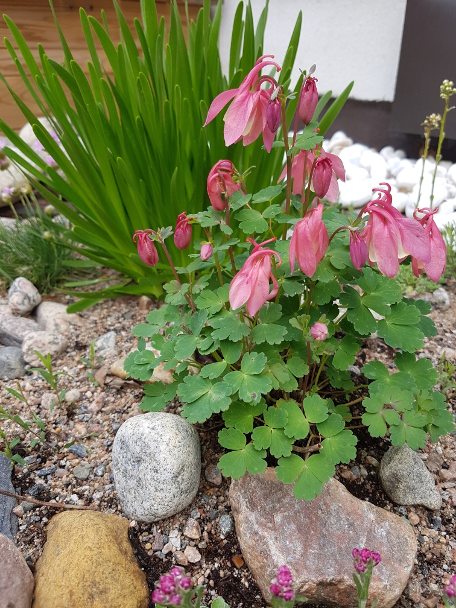

HARRASTUKSET
Käsityöt
Olen harrastanut käsitöitä lapsesta asti. Tykkään yleensä suunnitella kaavat ja mallit niin ompelutöihin,
neulontaa kuin vaikka virkkaukseen. Käsitöissä kiehtoo menetelmien laaja kirjo ja
tekemisen loputtoman tuntuiset mahdollisuudet.
Innostun aika ajoin neulomaan, ompelemaan, virkkaamaan, nypläämään, tekemään miniatyyrejä tai vain
askartelemaan lapsen kanssa. Pääasia, että saan säännöllisesti näprätä jotain kivaa ja kaunista.
Olen kirjoittanut vuosia blogia käsitöistäni, mutta viime vuosina lasten vauvavuodet keskeytti blogin.
Blogisivusto on nyt kaatunut, mutta tarkoitus on virkistää se eloon taas piakkoin. Samalla saan mahdollisuuden
kokeilla uusia koodaustaitojani ja tehdä blogista entistä hienompi.

Puutarha
Olen aina ollut kiinnostunut kasveista ja niiden kasvattaminen luontaisesti on myös mukavaa ja rentouttavaa ajanvietettä. Viime vuosina olen saanut suunnitella omaa pientä 5x6m rivitalon takapihaa oman näköisekseni.
